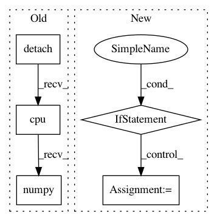

e304d4ee794a4cca8c116e52f99077ee71f87af1,mushroom/approximators/parametric/pytorch_network.py,PyTorchApproximator,predict,#PyTorchApproximator#,62
Before Change
val = self._network.forward(*torch_args, **kwargs).detach().numpy()
else:
torch_args = [torch.from_numpy(x).cuda() for x in args]
val = self._network.forward(*torch_args,
**kwargs).detach().cpu().numpy()
return val
def fit(self, *args, **kwargs):
After Change
torch_args = [torch.from_numpy(x).cuda() for x in args]
val = self._network.forward(*torch_args,
**kwargs)
if isinstance(val, tuple):
val = tuple([x.detach().cpu().numpy() for x in val])
else:
val = val.detach().cpu().numpy()
return val
def fit(self, *args, **kwargs):
if self._dropout:
In pattern: SUPERPATTERN
Frequency: 4
Non-data size: 5
Instances
Project Name: AIRLab-POLIMI/mushroom
Commit Name: e304d4ee794a4cca8c116e52f99077ee71f87af1
Time: 2018-09-03
Author: carloderamo@gmail.com
File Name: mushroom/approximators/parametric/pytorch_network.py
Class Name: PyTorchApproximator
Method Name: predict
Project Name: rlworkgroup/garage
Commit Name: e4b6611cb73ef7658f028831be1aa6bd85ecbed0
Time: 2020-08-14
Author: 38871737+avnishn@users.noreply.github.com
File Name: src/garage/torch/policies/stochastic_policy.py
Class Name: StochasticPolicy
Method Name: get_action
Project Name: arraiy/torchgeometry
Commit Name: fb0566fae5e074d15bca1212f61610fdef1535f3
Time: 2019-08-22
Author: ducha.aiki@gmail.com
File Name: kornia/feature/laf.py
Class Name:
Method Name: visualize_LAF
Project Name: open-mmlab/mmdetection
Commit Name: e421e832883241bd7831bf77dc31d5fb31d7da58
Time: 2019-04-06
Author: chenkaidev@gmail.com
File Name: mmdet/ops/nms/nms_wrapper.py
Class Name:
Method Name: nms